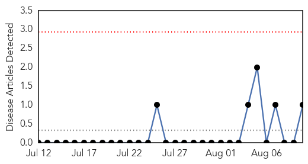
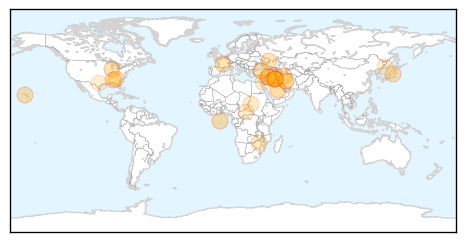

Yellow Fever
30-Day Web Trend
0 alerts, 0 warnings

30-Day Twitter Trend
0 alerts, 0 warnings

Article Locations
Article Confidences

Top Articles:
Top Tweets:
-
No tweets found for Aug 10, 2014
Unknown
30-Day Web Trend
0 alerts, 0 warnings
30-Day Twitter Trend
5 alerts, 0 warnings
Article Locations
Article Confidences
Top Articles:
- 0.981
- Tuberculosis: Atlanta officials strive to contain outbreak of deadly disease
- 0.967
- Atlanta confronts tuberculosis outbreak in homeless shelters
- 0.917
- Chicago Tribune
- 0.917
- Chicago Tribune
- 0.910
- The world windows to Thailand
- 0.866
- Iraq's Maliki remains defiant on third term as insurgency rages
- 0.866
- Iraq's Maliki to deliver important speech
- 0.866
- Suicide bomber kills 10 Kurdish fighters in Iraq
- 0.866
- Turkish president-elect Erdogan calls for period of reconciliation
- 0.866
- Russia says in talks with Red Cross, U.N. on sending humanitarian aid to Ukraine
- 0.866
- A car is covered in spray as waves crash on the quay during high winds and storms at Newhaven in southern England
- 0.866
- Iraqi Kurdish president asks world for weapons to fight Islamic State
- 0.866
- Syria's Assad reappoints Halaqi as PM -state media
- 0.866
- Plane crashes at Tehran's Mehrabad airport- IRNA
- 0.852
- 3 homeless people killed, 47 infected
- 0.717
- HEALTH SECTOR: One step forward, two steps back
- 0.635
- Sudan: 16 Cental Darfur children dead from mystery disease
- 0.585
- 16 Cental Darfur children dead from mystery disease - Sudan
- 0.579
- US launches new air strikes on ISIS militants in Iraq
- 0.578
- Fighting rages in Donetsk as West warns Russia
- 0.578
- Palestinians to abandon Gaza truce talks unless Israeli team returns
- 0.578
- Israel, Hamas accept new 72-hour Gaza ceasefire
- 0.578
- ISIS militants killed hundreds of Yazidis, Iraqi minister says
- 0.578
- Iraq’s fleeing Christians rebuild shattered lives in France
- 0.578
- France calls for inclusive Iraqi government to counter ISIS advance
- 0.578
- France to consider arming Iraqi Kurds battling ISIS
- 0.578
- Ex-Seleka rebel adviser named new CAR prime minister
- 0.567
- UN Envoy: We are responding to the sudden influx of displaced into the KRG and bordering areas [EN/AR] - Iraq
- 0.545
- Schools take precautions while boil-water alert in effect
- 0.537
- Mystery Texas Rabies Carrier has Health Officials Scrambling
Top Tweets:
- 0.566
- Health care workers, already in short supply, hit hard by the outbreak: 145 have been infected, and 80 have died. http://t.co/tIo4CQoN3L